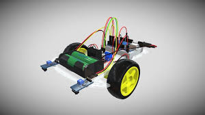

O projeto consiste em uma aplicação web interativa, desenvolvida com HTML, CSS, e JavaScript, que
simula uma experiência narrativa centrada no tema da Inteligência Artificial. O objetivo é
engajar os jogadores em um cenário fictício que aborda o avanço da IA e suas possíveis
consequências para a humanidade, destacando a importância da reflexão ética sobre a tecnologia.
A Robótica Paraná é um programa de política pública criado pelo Governo do Estado do Paraná com o objetivo de disseminar a educação tecnológica e a robótica no ensino básico, tanto em escolas públicas quanto privadas. A iniciativa visa preparar os estudantes para os desafios do futuro, estimulando o raciocínio lógico, a criatividade, o trabalho em equipe e a capacidade de resolver problemas de forma inovadora. O programa é uma resposta à crescente demanda por profissionais qualificados em áreas de tecnologia, e busca colocar o Paraná na vanguarda da educação e inovação no Brasil.
O programa se baseia em três pilares principais: a capacitação de professores, o fornecimento de kits de robótica e a realização de competições e eventos. A capacitação dos professores é fundamental, pois eles são os principais agentes na implementação da robótica em sala de aula. Para isso, são oferecidos cursos de formação continuada, workshops e materiais didáticos que os auxiliam a integrar a robótica ao currículo escolar de forma interdisciplinar.
Os kits de robótica, fornecidos pelo governo, são a ferramenta prática que permite aos alunos construírem e programarem seus próprios robôs. Esses kits geralmente incluem componentes como microcontroladores, sensores, motores e peças de montagem, que estimulam a experimentação e a prototipagem. A utilização desses materiais transforma o aprendizado em algo mais dinâmico e envolvente, tirando o aluno da posição de mero espectador e colocando-o como protagonista do seu próprio processo de descoberta.
